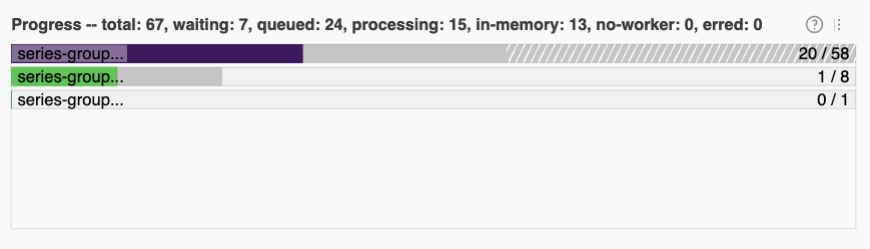

Importing ARCOS Data with Dask¶
Last week, we used dask to play with a few datasets to get a feel for how dask works. In order to help us develop code that would run quickly, however, we worked with very small, safe datasets.
Today, we will continue to work with dask, but this time using much larger datasets. This means that (a) doing things incorrectly may lead to your computer crashing (So save all your open files before you start!), and (b) many of the commands you are being asked run will take several minutes each.
For familiarity, and so you can see what advantages dask can bring to your workflow, today we’ll be working with the DEA ARCOS drug shipment database published by the Washington Post! However, to strike a balance between size and speed, we’ll be working with a slightly thinned version that has only the last two years of data, instead of all six.
(1) Download the thinned ARCOS data from this link. It should be about 2GB zipped, 25 GB unzipped.
(2) Our goal today is going to be to find the pharmaceutical company that has shipped the most pills (DOSAGE_UNIT) in the US.
When working with large datasets, it is good practice to begin by prototyping your code with a subset of your data. So begin by using pandas to read in the first 100,000 lines of the ARCOS data and write pandas code to compute the shipments from each shipper (the group that reported the shipment).
(3) Now let’s turn to dask. Re-write your code for dask, and calculate the total shipments by reporting company. Remember:
Start by spinning up a cluster
Dask won’t read compressed files, so you have to unzip your ARCOS data.
Start your cluster in a cell all by itself since you don’t want to keep re-running the “start a cluster” code.
Don’t load columns you don’t need!
If you need to review dask basic code, check here.
As you run your code, make sure to click on the Dashboard link below where you created your cluster:

Among other things, the bar across the bottom should give you a sense of how long your task will take:

(For context, my core (which has 8 physical cores that present as 16 with hyperthreading) took about 30 seconds. My computer is fast, but most computers should be done within a couple minutes).
(4) Now let’s calculate, for each state, what company shipped the most pills?
Note you will quickly find that you can’t sort in dask – sorting in parallel is really tricky! So you’ll have to work around that. Do what you need to do on the big dataset first, then compute it all so you get it as a regular pandas dataframe, then finish.
Does this seem like a situation where a single company is responsible for the opioid epidemic?
(5) Now go ahead and try and re-do the chunking you did by hand for your project – calculate, for each year, the total morphine equivalents sent to each county in the US.